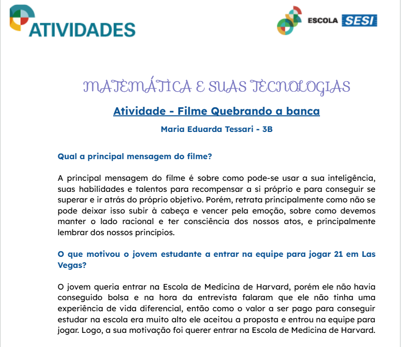

C5: Aplicar o pensamento probabilístico para quantificar e fazer previsões em situações aplicadas a diferentes áreas do conhecimento e da vida cotidiana; H31: Reconhecer fenômenos e eventos (naturais, científicos, tecnológicos e/ou sociais) de caráter aleatório, compreendendo o significado e a importância da probabilidade como meio de prever resultados; H32: Identificar em diferentes áreas científicas e outras atividades práticas modelos e problemas que fazem uso de estatísticas e probabilidades.
Para realizar esta atividade começamos assistindo ao famoso filme "Quebrando a Banca" (2008), para entendermos sobre a aplicação da matemática na vida. Com isso, tivemos que realizar essa atividade escrita, como uma forma de interpretarmos o filme em diferentes visões, respondendo às perguntas propostas e escrevendo uma ideia de roteiro de filme de Hollywood que envolvesse matemática. Achei essa uma atividade muito interessante, pois acredito que questôes de interpretação nos ajudam a enxergar a obra de diferentes visões. A parte mais desafiadora na minha opinião foi produzir o estilo de roteiro, pois pensar em como aplicar a matemática num cenário fictício do entretenimento foi algo bem diferente, mas que trabalhou muito minha criatividade.
Acessar atividadeC5: Aplicar o pensamento probabilístico para quantificar e fazer previsões em situações aplicadas a diferentes áreas do conhecimento e da vida cotidiana; H30: Identificar dados, regularidades e relações numa situação que envolva o raciocínio combinatório, utilizando os processos de contagem; H31: Reconhecer fenômenos e eventos (naturais, científicos, tecnológicos e/ou sociais) de caráter aleatório, compreendendo o significado e a importância da probabilidade como meio de prever resultados.
Após assistirmos e trabalharmos o filme “Quebrando a Banca” tivemos que produzir um jogo, que envolvesse o conteúdo estudado naquele momento (análise combinatória e teoria das probabilidades) para que pudéssemos trabalhar o conteúdo de forma leve, espontânea e divertida, com base nas diferentes formas que a probabilidade foi utilizada no filme. Nosso grupo optou por fazer um jogo online, com o estilo de quiz e “Perguntados”, para subir o nível dependendo da quantidade de acertos. Achei uma atividade muito legal e interessante, pois pensar em uma aplicação da matemática no meio dos jogos, para que deixe ainda divertido e didático é um desafio, porém ver o resultado final é bem animador. Achei interessante também como, após finalizarmos o jogo, nosso horizonte acaba se expandindo e pensamos em ideias distintas, sempre trabalhando o conteúdo.
Acessar atividadeAtividades do 2º Trimestre estarão disponíveis em breve.
Atividades do 3º Trimestre estarão disponíveis em breve.